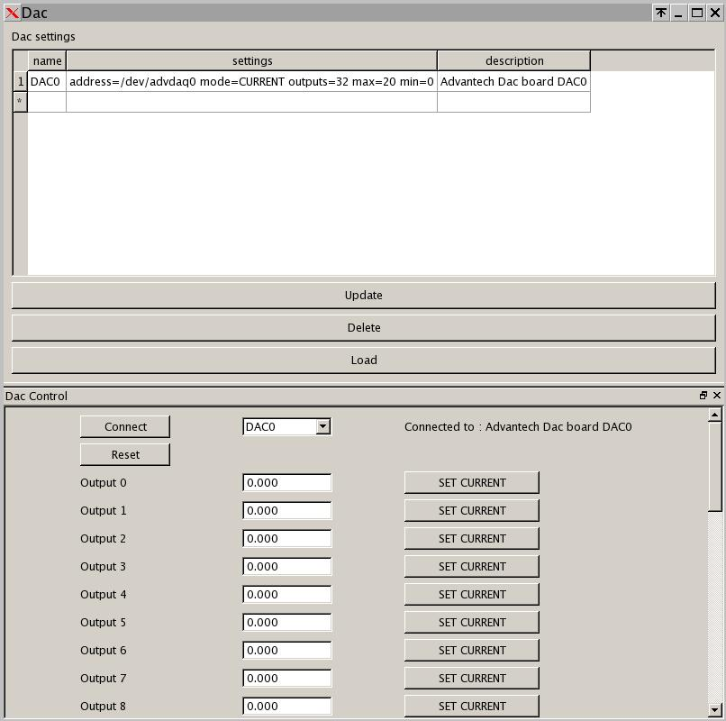

DAC devices are accessible through the PCI bus. Typical supported boards are the Advantech PCI-1720U, PCI-1723, PCI-1724U, and PCI-1727U (when the corresponding driver is enabled).

| name | This is a unique name given by the user defining the DAC board instance. |
| settings |
The address and DAC parameters such as mode (CURRENT or VOLT), number of outputs,
and min/max range. Example setting line:
|
| description | A brief description of the DAC board. |